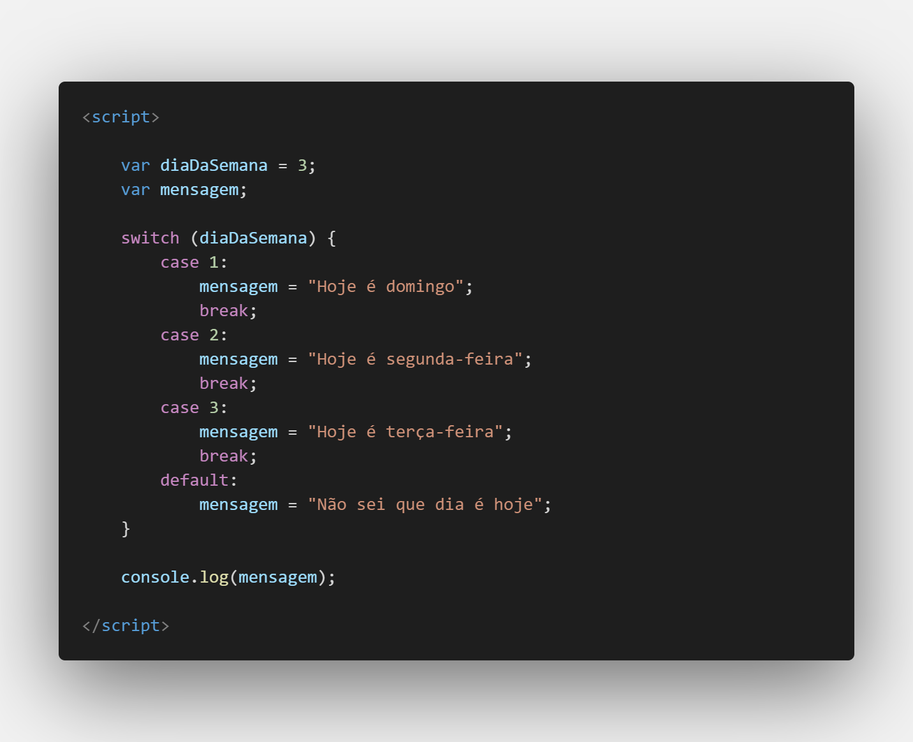

Aula 15/26 - Condicionais - Switch
Switch é uma construção de controle de fluxo em muitas linguagens de programação, incluindo JavaScript. Ela é usada quando você tem uma variável ou expressão que pode ter diferentes valores e você deseja executar diferentes blocos de código com base nesses valores. A instrução switch oferece uma alternativa mais organizada e eficiente para uma série de condicionais if e else if.
Aqui está a estrutura básica de uma instrução switch em JavaScript:
switch (expressao) {
case valor1:
// Código a ser executado se expressao for igual a valor1
break;
case valor2:
// Código a ser executado se expressao for igual a valor2
break;
// ... mais casos ...
default:
// Código a ser executado se nenhum dos casos corresponder
}
- expressao: Uma expressão cujo valor será comparado com os diferentes casos.
- valor1, valor2, etc.: Os valores possíveis que a expressao pode ter.
- break: A palavra-chave break é usada para interromper a execução do switch após um caso correspondente ser encontrado. Sem o break, o fluxo de execução continuará nos casos subsequentes até encontrar um break ou até o final do switch.
- default: Este é um caso opcional que é executado quando nenhum dos valores corresponde à expressão.
Aqui está um exemplo de como usar a instrução switch em JavaScript:

Neste exemplo, o código avalia a variável diaDaSemana e, com base em seu valor, atribui uma mensagem correspondente. Como diaDaSemana é igual a 3, a mensagem "Hoje é terça-feira" será exibida.
A instrução switch é especialmente útil quando você tem uma série de possíveis valores que deseja comparar e para os quais deseja executar diferentes ações. Isso pode tornar seu código mais limpo e legível em comparação com uma série de condicionais if e else if.